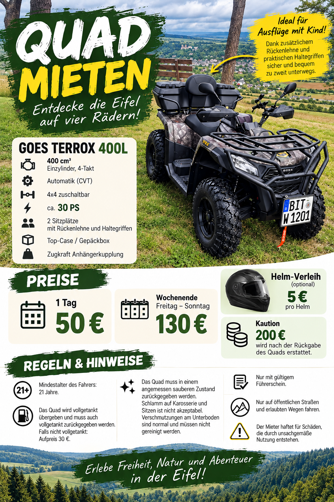

GOES TERROX 400L mieten
Entdecken Sie die Eifel auf vier Rädern. Das Quad kann für einen ganzen Tag gemietet werden. Die Vermietung erfolgt nach vorheriger Anfrage und Bestätigung.
Quad unverbindlich anfragen
Technische Angaben
Modell: GOES TERROX 400L. Die Angaben stammen aus den vorhandenen Fahrzeug-Werbematerialien. Eine Motorleistung wird nicht genannt, da die bisher vorhandenen Grafiken voneinander abweichende Werte zeigen.
Die erforderliche Führerscheinklasse wird vor der Vermietung anhand der Fahrzeugpapiere und des Führerscheins geprüft. Die Angabe A2 oder B ist noch nicht bestätigt.
Galerie
Eingebunden sind das bereitgestellte Foto des Quads und die vorhandene Werbegrafik. Weitere Einzelbilder können ergänzt werden.

Video
Der Videoplayer ist vorbereitet. Eine Videodatei war in den vorhandenen Materialien nicht enthalten.
Laden Sie die Videodatei als videos/quad-tour.mp4 hoch, damit sie hier abgespielt wird.
Preise
Tagesmiete
Für einen ganzen Tag.
Kaution
Die Kaution wird bei der Übergabe dokumentiert. Die Rückzahlung erfolgt nach der Rückgabe und Prüfung des Fahrzeugs, sofern keine offenen Ansprüche bestehen.
Reservierung
Der Termin ist erst nach persönlicher Bestätigung reserviert.
Mietbedingungen und Regeln
Mindestalter
Der Fahrer muss mindestens 21 Jahre alt sein.
Führerschein
Ein gültiger Führerschein ist erforderlich. Die konkrete Fahrberechtigung wird vor Übergabe anhand der Fahrzeugpapiere und des Führerscheins geprüft.
Kraftstoff
Das Quad wird vollgetankt übergeben und muss vollgetankt zurückgegeben werden.
Reinigung
Übermäßige Verschmutzungen müssen vor der Rückgabe entfernt werden.
Umgang mit dem Fahrzeug
Das Quad ist sachgemäß und gemäß den geltenden Vorschriften zu benutzen. Schäden oder Unfälle sind dem Vermieter unverzüglich mitzuteilen.
Fahrwege
Es dürfen nur Straßen und Wege befahren werden, auf denen die Nutzung rechtlich zulässig ist. Offroad-Fahrten sind nicht automatisch erlaubt.
Hinweis: Diese Zusammenfassung ersetzt keinen vollständigen Mietvertrag. Versicherungsumfang, Selbstbeteiligung, Übergabeprotokoll, Rückgabezeit und Vorgehen bei Schäden sollten vor der Vermietung schriftlich festgelegt werden.